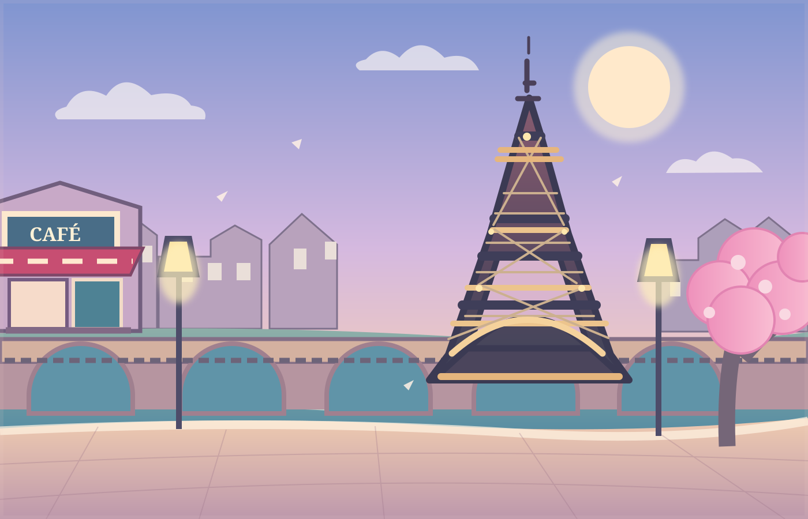
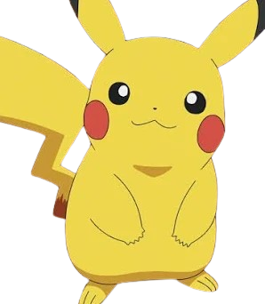
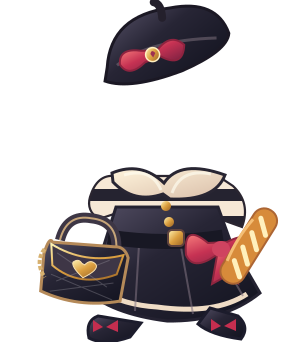

✦ CUATRO · Laboratorio de imágenes
Experimento 03 · ParísBonjour, París.
Una aventura parisina de Pikachu: boina con moño, vestido marinero, bolsito y baguette, frente a una Torre Eiffel de cuento. El personaje original sigue siendo la misma imagen transparente.

La vie est belle UNE PETITE AVENTURE À PARIS


Bonjour ! ♡
✦ París · Escena animada
Mon petit rêve
Cómo está construido: París y los accesorios se dibujaron como SVG caricaturescos en archivos separados, inspirados en el conjunto de boina, vestido a rayas y complementos elegido. El personaje es el PNG limpiado por remove.bg; no se modificaron sus rasgos. El movimiento actual es un paseo con balanceo de cuerpo completo, no una caminata articulada por piernas. Las pruebas de surf y castillo se conservaron.